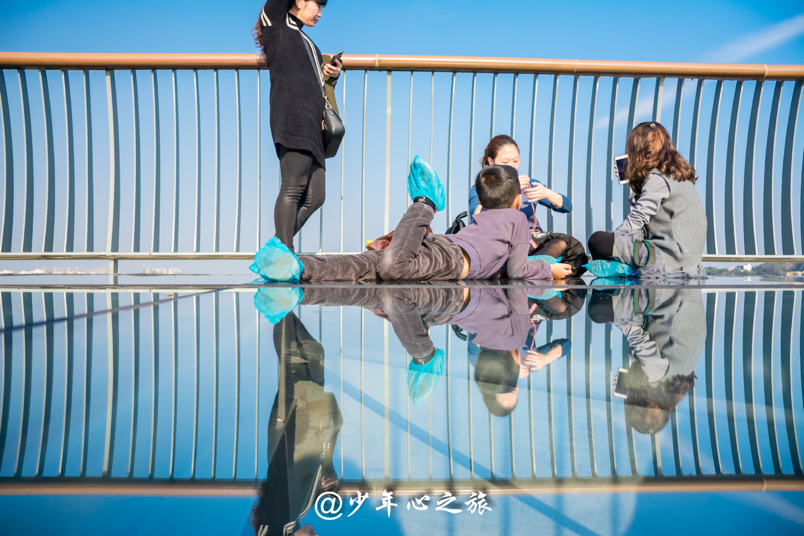
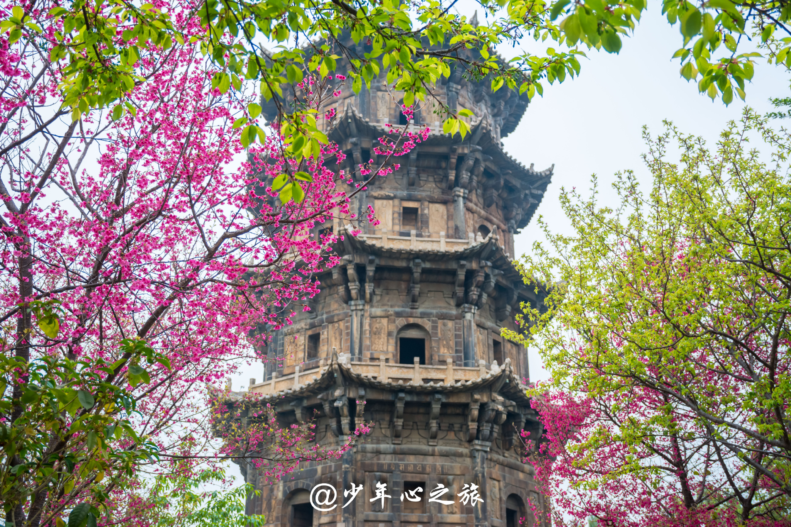
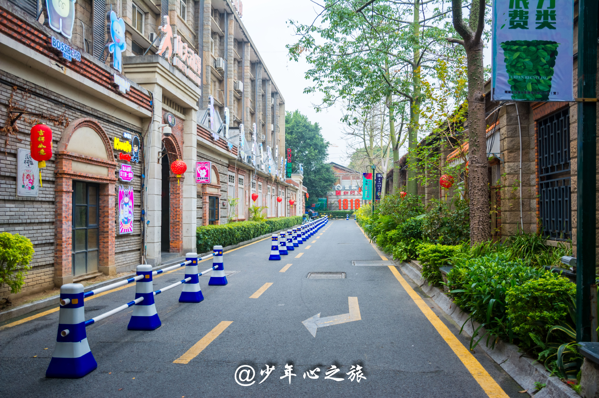
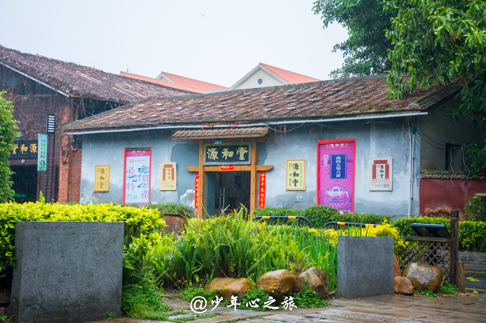

| Prefect Travrling | 首页 | 地区介绍 | 景区介绍 | ||||||||
|
|||||||||||
| 穿越千年的繁华，福建泉州超详攻略 |
| 2018-06-10 00:00 |
【交通】 注：因每人出发点不一致，百度查得到的公交路线就不熬述。 1，泉州离厦门和福州都很近，动车1小时内可达，潮汕站到泉州为2小时； 2，泉州站距离市区7公里左右，可以选择坐公交和打的士，的士价格为30元左右。 3，去崇武古城可到泉州客运中心站做车，票价15元，行程1小时； 4，洛阳桥距泉州城区13公里，古代汉族桥梁建筑的杰作之一，看图片感兴趣的可以前往一看； 5，其他景点滴滴、公交或共享单车都可以到达。 【门票】 1，泉州清源山网购价65元，游玩当天15:00前可下单。 2，崇武古城网购价45元，游玩当天15:00前可下单。 3，天后宫门票10元，其余景点皆免费。 【住宿】 建议住西街附近，有很多小吃，晚上和白天都可以逛这条古街。 |
|  |
|  |
|  |
|  |
| 上一篇:去福建武夷山游玩，看这篇攻略就够 |
| 下一篇：霞浦：北岐拍日出 |
PREFECT TRAVLING |
 |
地址：江苏省苏州市张家港市福新路1号 电话：13601475824 邮箱：130638633@qq.com QQ： 1370638633 |